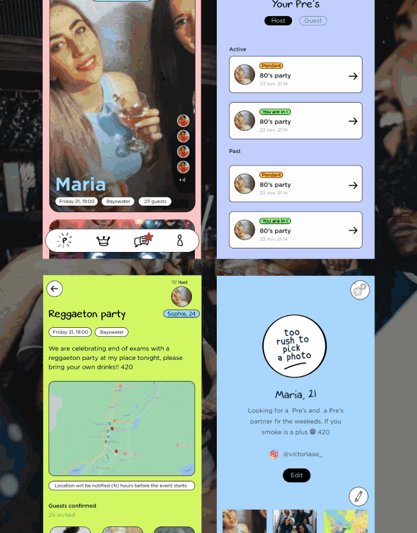
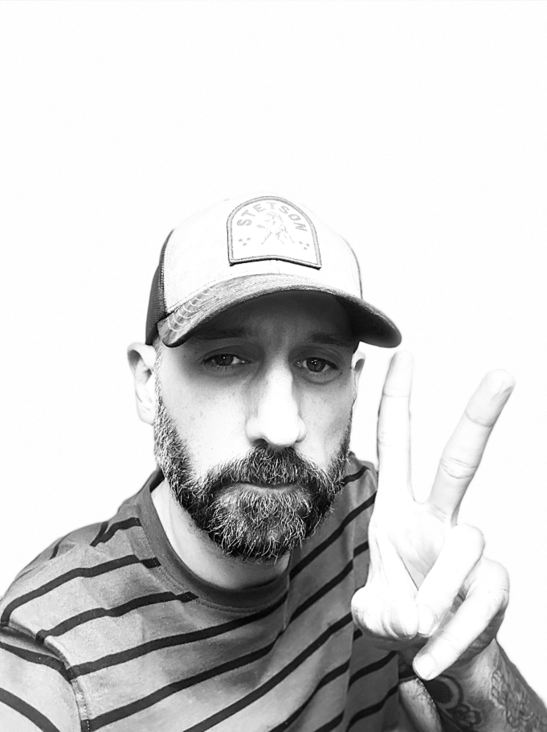

Manu Marquez Digital Portfolio 2026
Loading all the resources…
v3.0 (BETA)
Manu Márquez
12+
Years of experience
2 mo.
From idea to live AI feature
I'm Manu, a B2B product designer. I work on complex problems, with many stakeholders, ambiguous requirements and legacy constraints, and help turn them into products that ship. I also bring AI into how teams work, from design handoff to delivery, so they decide faster and build with fewer surprises.


Designing screens keeps getting faster, especially with AI. What still takes time is figuring out what's worth building, when requirements are unclear, stakeholders see things differently and much of the context lives in people's heads.
That's the part of the job I enjoy most, and what I've been doing for over twelve years: getting business, design and engineering on the same page, staying close to the results, and using AI in the team's process to move a bit faster.
Selected projects
Timeline
2024
Clasing
Product Manager
A fast-growing company whose teams had drifted away from business and users. Cut uncertainty, sped up delivery and sharpened estimates, then shipped Ari, its AI layer, in two months.
Uncertainty Read case2023
Leemons
Head of Design
A learning platform launching AI products while the team kept growing. Ran the design system, tightened handoffs to engineering and redesigned the website in under a year.
Complexity Visit site2021
CodeCandy
Founder
Founders with an idea and no product yet. Started a studio to turn those ideas into products, owning design, front-end and the business side.
Uncertainty View repo2020
Wetaca
Product & Brand Designer
A food startup growing fast on both product and brand. Kept them under one design language, so every new feature still felt like Wetaca.
Focus Visit site2018
BotOn
Product Designer & Front-end
Raw IoT data coming from vehicle fleets. Turned it into a product to connect, measure and decide, from design to front-end.
Complexity Visit site2018
PuedoCircular
Product Designer
Madrid's shifting traffic restrictions. Reduced them to the one question drivers care about: can I drive today?
Focus Visit site2016
Synergie
UX Designer & Front-end
Hours of tedious paperwork. Redesigned the flow and built the front-end that cuts it down.
Focus Visit site2014
Glownet
UX Designer & Front-end
Cashless RFID payments at live events. Designed and built the tools to manage them, where things need to work on the spot.
Complexity Visit siteSide projects
Small products I design and build end to end, with AI as a development partner. My way of learning by shipping.
A community to find out which whisky suits you, learn to taste it and keep track of your favourites.
Learned: designing for taste means helping people put words to what they like.
finest.rocks ↗Compares the same calendar day across every year on record at any AEMET weather station, to see whether it's really getting hotter.
Learned: making public data honest: averages, trends and a clear note on what a single day can't prove.
secalienta.com ↗A worldwide directory of ready-to-use therapeutic foods for NGOs and nutrition teams: composition, ingredients, producer and cost.
Learned: when your users make field decisions, every data point needs its source in plain sight.
rutfinder ↗